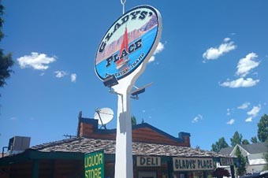

There's Something About Glady's Place
by Suzi Lawson
When visiting or just passing through, dont forget to stop by Glady's Place. "GLADYS' PLACE is considered a tradition amongst many people traveling through the Bear Lake Valley on Highway 89. This 'must stop', home town country store packs a lot of fond memories for many after a fun day at the lake. People from around the world have passed through our doors. Our 50 plus years of existance proves that we can keep you coming back with our friendly service and assortment of products we carry. On any given day you can find someone sipping a soda, enjoying a famous hand made sandwich, an ice-cream, or scratching a lotto ticket outside on the front porch. We honestly believe Glady's Place 'IS THE PLACE'" gladysplace.homestead.com